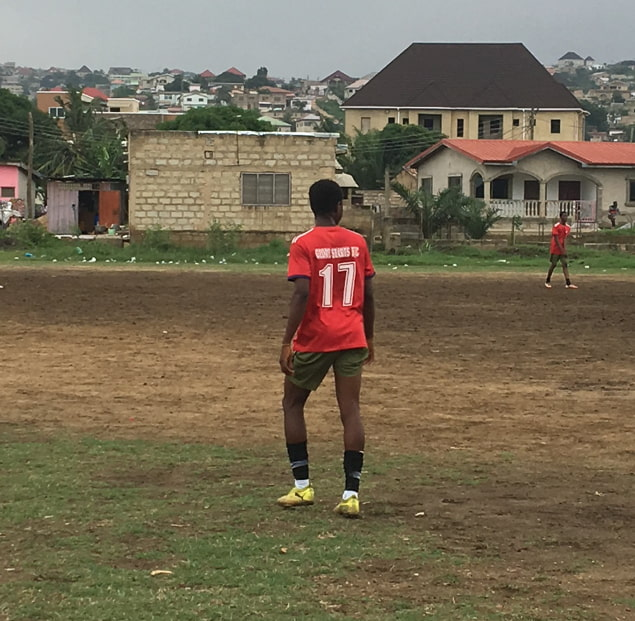

Krakani Benjamin | WDD 130
My name is Benjamin Krakani, all the way from Ghana, football has been a big part of my life. It has taught me teamwork, determination and leadership qualities i apply in everything i do. Whether on the pitch or in my daily life, I always give my best effort. I believe life’s better when you’ve got a ball at your feet and a smile on your face😊